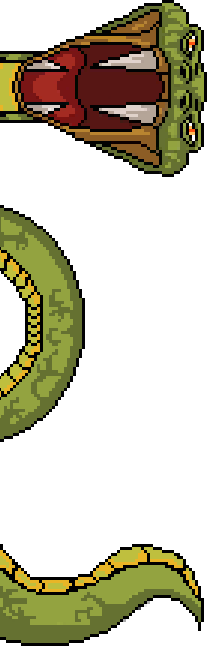

© 2025 Alessandra Peluzzi
E se le responsabilità di Snake crescessero con lui?
Crawling è un videogioco che ho sviluppato nel 2023 per fare pratica con Python e giocare con un tipo di scrittura diverso dal solito. La meccanica è la stessa di Snake, con una svolta: man mano che il serpente cresce è chiamato a fare scelte sempre più difficili che cambiano la trama, proprio come succede nella vita. Trovare l'amore, entrare in politica, affondare in un loop di malattia mentale, questi sono solo alcuni dei percorsi in cui si dirama il gioco.
Fai il DOWNLOAD per scoprili tutti ;)
Scaricare Crawling direttamente dal mio sito potrebbe esporti a virus e minacce. Per evitare scherzi, clicca il tasto qui sotto: ti invierò il gioco personalmente.
Ah, un'ultima cosa: Crawling è disponibile solo per Microsoft desktop.